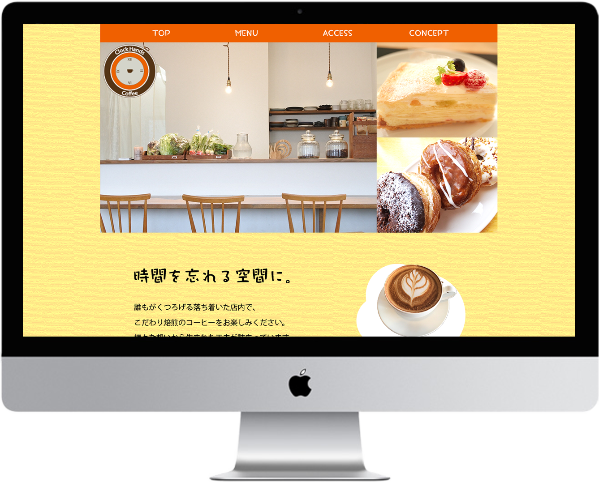
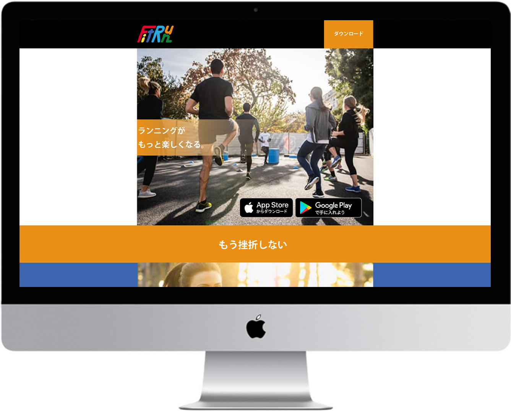

Clock Hands Cafe
制作時間
１ヶ月程度
使用したツール
Photoshop、Illustrator
制作ポイント
「時間を忘れる空間に。」がコンセプトです。お客様が店に立ち寄った際には時間を忘れてしまうほど楽しんでほしい。そのため、ロゴは時計をイメージし、時間を忘れるという意味から秒針の無いデザインにしました。ベースカラーを黄色にし、アクセントにオレンジ色を入れることで、楽しげな雰囲気のある店だとイメージしやすいようにしました。季節限定スイーツの画像には、注目されるよう白い雲のような装飾を付けて目に留まるようにしました。
作品のURL
https://aiaiedm.github.io/Clock-Hands-Coffee/index.htmlFitRun
制作時間
2週間程度
使用したツール
Photoshop、Illustrator
制作ポイント
補色である青とオレンジを使用し、サイト全体にコントラスト感を持たせました。また、ロゴの色にもサイトと同色の青とオレンジのほか、赤や黄などを使用し、配色を工夫しました。
作品のURL
https://aiaiedm.github.io/FitRun/WHERE'S

制作時間
2週間程度
使用したツール
Photoshop
制作ポイント
ロゴに使用した色をサイトのそれぞれの見出しに使い統一感を持たせました。配色をペール系で合わせ、全体的に優しい印象になるように仕上げました。